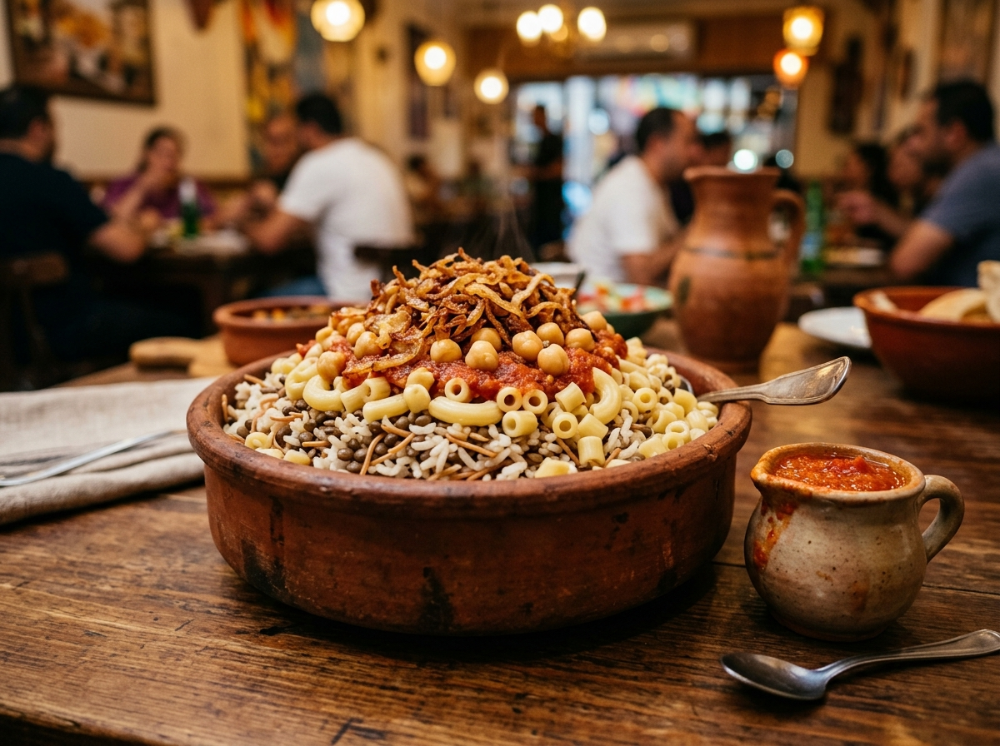

تراث ممتد لأكثر من 5000 عام من اللذاذة والأصالة
نكهات من قلب مصر، على أصولها وبالسمنة البلدي!
من طشة الملوخية المدوية، إلى سر دقة الكشري وحمص الشام، وقرمشة الحواوشي الأسطورية. اكتشف أشهر الأكلات
المصرية التراثية بمقادير دقيقة وأسرار الطبخ الموروثة بدون أي تعقيد.
+5000
سنة حضارة وتاريخ
100%
طعم وسمنة بلدي

كشري التحرير
بالتقلية والدقة الحارة
تقييم الأصالة
★★★★★ (4.9/5)
عبق الحضارة
حكاية المطبخ المصري عبر العصور
المطبخ المصري ليس مجرد وجبات، بل هو تاريخ حي يُروى في كل لقمة! فالفول المدمس والبامية والعيش الشمسي
تعود
أصولها لعصر الفراعنة بناة الأهرامات.
ثم أضاف العصر الفاطمي الملوخية وأم علي وحلاوة المولد، حتى جاء العصر الحديث وابتكر الكشري والحواوشي
لتكتمل لوحة من ألذ مطابخ العالم وأكثرها كرماً ودفئاً.
العصر الفرعوني
الفول، البصل، والعيش البلدي
أساس الغذاء عند بناة الأهرامات وتماثيل سقارة ونيل مصر الخالد.
العصر الفاطمي
الملوخية، الفتة، وحلوى المولد
طعام الملوك وقصور القاهرة المعزية وليالي الاحتفالات الشعبية الكبرى.
العصر الحديث
الكشري، الحواوشي، والشارع المصري
خلطة الثقافات وتوليفة البهارات المشتعلة مع السمنة البلدي وحب اللمة.
طشة الملوخية المظبوطة
الثوم المفروم ناعماً مع الكزبرة الجافة المطحونة طازجاً في ملعقة سمنة بلدي كبيرة، ونزولها فوراً على
الشوربة مع عدم تغطية الحلة أبداً كي لا تسقط الملوخية للقاع.
قرمشة بصل الكشري (الورْد)
تقطيع البصل شرائح رفيعة جداً، ورشه بملعقة نشا وقليل من الدقيق قبل القلي في زيت غزير وساخن، واستخدام
زيت
البصل ذاته في طهي الأرز والصلصة للنكهة العبقرية.
سر حواوشي الحاتي البلدي
نسبة دهن (لية ضاني) بنسبة لا تقل عن 20% في اللحم المفروم، مع بشر البصل وتصفيته خفيفاً، ودعك اللحم
ببهارات الكبيبة الصيني وجوزة الطيب قبل حشو العيش البلدي الطازج.
صلصة الفتة بالخل والثوم
تشويح الثوم في السمن، ثم "شهقة" الخل الأبيض قبل إضافة معجون الطماطم وعصيرها الطازج، وسقي العيش المحمص
بكبشة شوربة غنية وكبشة من صلصة الثوم.
×
الكشري المصري الأصيل
سلطان المائدة المصرية وتوليفة البهارات والبصل المقرمش والدقة الحارة.
45 دقيقة
5 أفراد
متوسط
المكونات والمقادير
- كوب عدس بني (أبو جبة) مسلوق نصف سلقة
- كوب أرز مصري مغسول ومصفى
- كوب شعرية محمرة بلون ذهبي
- مكرونة مشكلة مسلوقة ومتبلة بزيت البصل
- 4 بصلات مقطعة شرائح رفيعة ومقلية مقرمشة
- حمص مسلوق ومتبل بالكمون والليمون
- عصير طماطم طازج مع ثوم وخل وكمون وشطة
خطوات التحضير
- اقلِ البصل في زيت غزير حتى يقرمش، ثم صفّه واحتفظ بزيت القلي لطهي جميع المكونات.
- شوّح الشعرية في زيت البصل ثم أضف الأرز والعدس ومائهم واتركهم ينضجون معاً.
- حضّر الصلصة بتشويح الثوم في زيت البصل، ثم طشّه بالخل وعصير الطماطم والكمون.
- اخلط الثوم والخل والليمون والكمون والماء لتحضير الدقة الحارة اللذيذة.
- اغرف الأرز بالعدس أولاً، ثم المكرونة، ورش الصلصة والحمص وانثر التقلية المقرمشة على القمة.
سر الصنعة:
استخدم زيت قلي البصل المقرمش في سلق الأرز وعمل صلصة الطماطم وتقليب المكرونة المسلوقة! هذا هو السر
الحقيقي
لرائحة الكشري التي تشمها من مسافة شوارع.
×

طعمية إسكندراني وفول بالزيت الحار
الفلافل الخضراء الهشة مع الفول المدمس بالكمون والليمون.
25 دقيقة
4 أفراد
سهل
المكونات والمقادير
- نصف كيلو فول مدشوش منقوع ومفروم ناعم
- كُرات مصري وشبت وبقدونس وكزبرة خضراء
- سمسم أبيض وكزبرة حصى مجروشة للوجه
- فول مدمس ساخن مع زيت حار (بذور كتان)
- ملح، كمون، ليمون، شطة، وعيش بلدي طازج
خطوات التحضير
- افرم الفول المدشوش مع الكرات والخضرة والثوم في المفرمة مرتين للحصول على عجينة ناعمة.
- اخفق العجينة يدوياً ليدخلها الهواء وتصبح هشة عند القلي.
- شكّل أقراص الطعمية وغطّها بالسمسم والكزبرة الحصى واقلها في زيت غزير وساخن.
- تبّل الفول المدمس بالزيت الحار والكمون والليمون وقدّمهما مع الطماطم والمخلل والعيش البلدي.
سر الصنعة:
استخدم نبات "الكُرات البلدي" في فرم عجينة الطعمية وتجنب الإكثار من البصل حتى لا تفرز ماءً وتتفكك أو
تشرب
الزيت أثناء القلي!
×

الفتة المصرية بالخل والثوم
وليمة الأعياد والمناسبات واللحم الضأن المشوح بالسمن البلدي.
60 دقيقة
6 أفراد
متوسط
المكونات والمقادير
- لحم ضأن مسلوق مع البهارات ومحمر بالسمن
- خبز بلدي محمص في السمن البلدي بالفرن
- أرز مصري أبيض مطبوخ بالسمنة ومفلفل
- رأس ثوم مفروم ونصف كوب خل أبيض نقي
- عصير طماطم مسبك مع صلصة وشوربة لحم دسمة
خطوات التحضير
- حمّص مكعبات العيش البلدي مع ملعقة سمنة ورشة ثوم في الفرن حتى يقرمش.
- شوّح الثوم في السمن، ثم طشّه بالخل الأبيض، واقسم الخليط لنصفين (دقة، وصلصة طماطم).
- اسكب كبشة مرقة دافئة وملعقة من دقة الخل والثوم على العيش المحمص في طبق التقديم.
- افرد الأرز الأبيض المفلفل فوق الخبز، وزيّن بصلصة الطماطم ورتب قطع اللحم المحمر على القمة.
سر الصنعة:
لا تغرق العيش بالمرقة حتى لا يتعجن! فقط كبشة مرقة واحدة دافئة مع كبشة من دقة الخل والثوم ليبقى الخبز
محتفظاً بقرمشته الفاتنة مع الطراوة.
×
الملوخية الخضراء بطشة الثوم
طعام الملوك برائحة السمن الفلاحي والكزبرة الجافة والشهقة الأصيلة.
35 دقيقة
4 أفراد
سهل
المكونات والمقادير
- كيلو ملوخية طازجة مخروطة بالمخرطة اليدوية
- 4 أكواب مرقة دجاج أو بط بلدي دسمة وساخنة
- رأس ثوم مفرومة ناعماً مع ملعقتين كزبرة جافة
- ملعقتان كبيرتان سمنة بلدي فلاحي
- رشة سكر صغيرة ونصف ملعقة صغيرة كربوناتو
خطوات التحضير
- اغلِ المرقة وأضف إليها رشة السكر وفص ثوم نيئ ورشة الكربوناتو للحفاظ على الخضار.
- أضف الملوخية المخروطة تدريجياً مع التقليب السريع بالمضرب السلك حتى يذوب القوام.
- في طاسة جانبية، سخن السمن البلدي وحمّر الثوم، ثم أضف الكزبرة الجافة وقلّب لثوانٍ.
- صب الطشة الساخنة مع "الشهقة" المصرية فوق الملوخية، واقلبها مرة واحدة وارفعها عن النار فوراً.
سر الصنعة:
ممنوع منعاً باتاً تغطية حلة الملوخية بعد وضع الطشة! تغطيتها تجعل بخار الماء يتكثف ويسقط الملوخية في قاع
الحلة ويفصلها عن الشوربة.
×

طاجن بامية باللحمة الضاني في الفرن
طاجن الصعايدة الفخاري بصلصة الطماطم والثوم المسبك واللحم المتبل.
55 دقيقة
5 أفراد
متوسط
المكونات والمقادير
- نصف كيلو بامية صغيرة مقمعة هرمياً
- نصف كيلو لحم ضأن مسلوق ومحتفظ بشوربته
- بصلة مفرومة، وثوم مدقوق مع قرن فلفل حار
- لتر عصير طماطم طازج مصفى، وسمنة بلدي
- عصير ليمونة كبيرة ورشة كزبرة ناشفة مطحونة
خطوات التحضير
- شوّح البصل والثوم والفلفل في السمن البلدي حتى يصفر اللون.
- أضف قطع اللحم المسلوق وشوّحها ثم صب عصير الطماطم والشوربة.
- أضف البامية المقمعة وعصير الليمون والكزبرة واتركها تغلي لمدة 10 دقائق.
- انقل الخليط إلى طاجن فخاري ساخن وأدخله الفرن تحت الشواية حتى يتسبك ويتحمر.
سر الصنعة:
عصير الليمون المضاف في بداية طهي البامية يمنع إفراز المادة اللزجة تماماً، ووضع الطاجن في فرن فخاري
يعطيه
طعم "شياط الفرن" المحبب عند أهل الريف.
×

محشي مشكل مصري بالأرز والخلطة
سيد العزائم المصرية بأوراق الكرنب وورق العنب والكوسة.
75 دقيقة
6 أفراد
مهارة وصبر
المكونات والمقادير
- ورق كرنب مسلوق، ورق عنب، كوسة، وفلفل رومي
- أرز مصري مغسول ومصفى جيداً
- حزمة شبت، بقدونس، وكزبرة خضراء مفرومة
- كيلو طماطم مسبكة مع كمية وفيرة من البصل المحمر
- ملعقة نعناع جاف مفروم وسمنة بلدي وزيت ذرة
- شوربة بط أو لحم دسمة متبلة بالليمون وفصوص الثوم
خطوات التحضير
- اخلط الأرز مع الصلصة المسبكة، الخضرة المفرومة، النعناع الجاف، والبهارات والزيت والسمنة.
- احشُ الخضار ولف ورق الكرنب والعنب ورصّه بإحكام في حلة مبطنة بشرائح البصل والطماطم.
- صب الشوربة المغلية حتى تصل لقبل الصف الأخير من المحشي واضغط عليه بطبق مسطح.
- سوّيه على نار عالية حتى يتشرب، ثم خفّض النار تماماً حتى يذوب كقطع الزبدة.
سر الصنعة:
رشة النعناع الناشف في خلطة المحشي مع إضافة ملعقتين زيت ذرة يعطيان لمعاناً وانفصالاً لحبات الأرز دون
تعجين
ونكهة لا تقاوم.
×
حواوشي بلدي مقرمش بالخلطة السرية
العيش البلدي المحشو باللحم المتبل باللية الضاني وقرمشة الأطراف المذهلة.
30 دقيقة
4 أفراد
سهل
المكونات والمقادير
- نصف كيلو لحم مفروم بنسبة دهن أو لية ضاني 20%
- بصلتان مفرومتان ناعماً ومعصورتان خفيفاً
- فلفل رومي وأخضر حار مفروم وطماطم مبشورة مصفاة
- بهارات حواوشي (كبابة صيني، قرفة، جوزة الطيب، فلفل أسود)
- عيش بلدي طازج بالردة مفتوح من الجانب
- سمنة بلدي لدهن وجه الرغيف قبل التسوية
خطوات التحضير
- ادعك اللحم المفروم مع البصل والفلفل والبهارات جيداً حتى تتجانس الأنسجة.
- افتح العيش البلدي وافرد طبقة متساوية من اللحم بالداخل دون المبالغة في السمك.
- ادهن الرغيف من الوجهين بفرشاة مبللة بالسمنة البلدي.
- سوّي الحواوشي على طاسة تيفال ساخنة ومدهونة، أو في الفرن حتى يقرمش ويتحمر.
سر الصنعة:
اللية الضاني (دهن الخروف) بنسبة 20% هي روح ورائحة حواوشي المحلات الجبارة! تعطي الرغيف القرمشة الخارجية
الذهبية والعصارة الطرية من الداخل.
×

فطير مشلتت فلاحي مورّق بالسمن البلدي
فخر الريف المصري بطبقاته الشفافة وطعم السمنة الفلاحي والقشطة.
50 دقيقة
4 أفراد
متوسط
المكونات والمقادير
- كيلو دقيق فاخر لجميع الأغراض
- ماء فاتر للعجن ورشة ملح وملعقة سكر
- كوبان سمن بلدي فلاحي مذاب وممزوج بقليل من الزيت
- نصف كوب قشطة بلدي طازجة لدهن الوجه
- عسل نحل وجبنة قديمة وعسل أسود بالطحينة للتقديم
خطوات التحضير
- اعجن الدقيق بالماء والملح والسكر جيداً لمدة 15 دقيقة حتى تحصل على عجينة مطاطية.
- قسّم العجين لكرات وادهنها بالزيت واتركها ترتاح لمدة ساعة كاملة.
- افرد كرة العجين على سطح مدهون بالسمن حتى تصبح شفافة ورقيقة جداً.
- اطوِ العجينة طبقات مع دهن السمنة بينها، ثم افردها بصينية وادهن الوجه بالقشطة واخبز بفرن حار جداً (240
مئوية).
سر الصنعة:
سر التوريقة هو راحة العجين الكافية قبل الفرد، والخبز في أعلى درجة حرارة ممكنة للفرن حتى لا ينشف الفطير
وتتبخر دهونه قبل أن ينتفخ ويورّق.
×

أم علي الملكية بالقشطة والمكسرات
حلوى الملوك والتاريخ بعبق الحليب والمكسرات والقشطة المحمرة.
25 دقيقة
5 أفراد
سهل
المكونات والمقادير
- رقائق بف باستري أو ملفيه محمص ومقرمش
- لتر حليب دسم مغلي ومحلى بالسكر والفانيليا
- مكسرات مشكلة (بندق، فستق، لوز) وزبيب وجوز هند
- كوب قشطة بلدي طازجة للوجه، وملعقة سمنة بلدي
خطوات التحضير
- كسّر رقائق البف باستري وضَعها في طاجن فخاري مدهون بالسمنة.
- وزّع المكسرات وجوز الهند والزبيب بين طبقات الرقائق.
- اغلِ الحليب مع السكر والفانيليا وصبه فوق الرقائق حتى تتشرب تماماً.
- افرد القشطة البلدي على الوجه وأدخل الطاجن تحت الشواية لمدة 8-10 دقائق حتى يتحمر.
سر الصنعة:
استخدام عجينة الملفيه المخبوزة طازجاً يمنح أم علي قواماً كريمياً مخملياً دون أن تتعجن أو تفرط في قاع
الطاجن.
×

سحلب مصري بالسمسم والمكسرات والقرفة
مشروب الشتاء المصري العريق برائحة المستكة والفول السوداني المحمص.
15 دقيقة
4 أكواب
سهل جداً
المكونات والمقادير
- 4 أكواب حليب كامل الدسم بارد
- 4 ملاعق كبيرة بودرة سحلب نقية مع مستكة مطحونة
- سكر حسب المذاق، ورشة فانيليا
- فول سوداني محمص، سمسم محمص، زبيب، ورشة قرفة ناعمة
خطوات التحضير
- أذب بودرة السحلب والسكر في الحليب وهو بارد تماماً لتجنب التكتل.
- ارفع الحليب على نار هادئة مع التقليب المستمر بمضرب سلك دون انقطاع.
- عندما يثقل القوام ويصبح حريرياً، ارفعه فوراً وصبه في أكواب التقديم.
- زيّن الوجه بالسمسم والفول السوداني ورشة القرفة والزبيب وقدّمه ساخناً.
سر الصنعة:
إذابة السحلب في الحليب البارد أولاً، ودق فصين من المستكة مع السكر هما سر رائحة مقاهي الحسين وخان
الخليلي
التراثية في ليالي الشتاء!